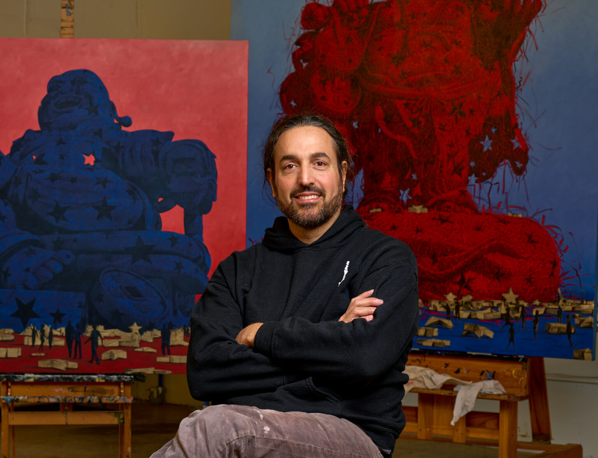

1976
Alexi Torres discusses the relationship between nature and man in a contemporary context emphasizing the interconnectedness of all living things.
His works are exceptionally complex, intricately weaving together organic and symbolic elements to create monumental works which challenge the viewer to see beneath the surface into the archetypal qualities of his subjects.
He seeks to initiate a dialogue on the effects and power of human thought and behavior on the ever-changing environment, and the need of appreciation of what is.
Alexi Torres
September 27, 1976, Bermeja, Matanzas, Cuba.
Currently Live and work in Atlanta, GA.
Education
1991-1995 National School of Arts, Havana, Cuba.
1989-1991 Elemental School Art, Matanzas, Cuba.
Publications
Art Palm Beach, Alexi Torres and His Infinity Vision, January – 2020.
My Modern Met, Interview: Artist Create “Woven” Paintings of How Man and Nature Are Connected, Februay – 2018.
Hi Fructose, The “Woven” Paintings of Alexi Torres. January – 2018.
Music on Walls, Interview with Alexi Torres, June – 2017.
Impakter Magazine. A Spiritual Adventure With Alexi Torres, May – 2017.
Art in America Magazine, September – 2016.
Widewalls, Cuban Artist Alexi Torres Exhibits at Unix Gallery. September – 2016.
Boca Raton Magazine, March – 2016.
Art Hive Magazine, Issue #16. 2016.
Style No Chaser, 2015.
People’s Shoice Award Winner Red Clay Exhibition, Huntsville Museum of Art, Alabama, 2014.
Summer Show – Wall Street International, Unix Gallery, New York, 2014.
Cover of MIA Art Fair guide book, January 17 – 20, 2014.
American Art Collector July 2012, “Organic Elements”, Page 126-127.
Huffington Post -Article, Alexi Torres Images Made Of Woven, Leaves, Feathers And Organic Materials.
Juxtapoz, “Woven” Oil Works By Alexi Torres.
Colossal Art & Design – Article, The Woven Oil Painting of Alexi Torres.
Daily Mail UK- Article, Weave never seen anything like it: Artist who paints like other people knit.
IFQ magazine 2004, Vol. 6, article and photo, page 55.
IFQ magazine 2004, Vol. 7, Grand Prize photo, page 59.
La Aurora Magazine 1999, Volume 1, article and photos, 51-52.
Solo Exhibitions
2022
Solo Booth Art Miami, Nov 29 – Dec 4, Contessa Gallery, Miami FL.
Woven Connections, Sep 15 – Oct 31. Contessa Gallery, Cleveland OH.
Thoughts of Hope, May 19 – July 29. Gallery 100, Atlanta GA.
2021
Solo Booth Art Miami, Nov 30 – Dec 5, Contessa Gallery, Miami FL.
Wish Me Well, Nov 12 – Jan 18. Maune Contemporary, Atlanta GA.
2016
“Sun Light” September 8 – October 15, Unix Gallery, Chelsea, NY.
“Celebration” June 10 – August 12, Jones – Carter Gallery, Lake City, SC.
“Women and Nature” January 27- March 14, The Walker Gallery , Kennesaw, GA.
2014
“ONE” April 12 – July 8, Marietta Cobb Museum Of Art, Marietta, GA.
“Positive Thoughts”, March 28 – April 25, Mason Murer Fine Art, Atlanta, GA.
2013
“Harvest of a Waning Moon”, June 20 – July 31, Unix Gallery, Chelsea, NY.
“Southern Voices”, Febrary 19 – March 31, Hoover Library, Hoover, AL.
2012
“Icons”, May 12- June 10, Unix Gallery, Miami, FL.
2011
“Weaving Ephemeral Elements”, Oct 8 – Nov 11, Evan Lurie Gallery, Carmel, IN.
2004
“Capitolio” Diaz Company Gallery, Atlanta, GA.
2003
“Protegiendome” Provincial Center of Visual Arts, Matanzas, Cuba.
“Estribos” Provincial Center of Visual Arts, Matanzas, Cuba.
2002
“Alarma” Provincial Center of Visual Arts, Matanzas, Cuba.
2001
“Camiones Viejos” Gallery Arenas Doradas, Varadero, Cuba.
1999
“Ceibas” Gallery Melia.Varadero, Cuba.
1998
“Migraciones” Gallery Bella Costa, Varadero, Cuba.
1990
“Dibujos” Gallery Nueva Paz, Nueva Paz, Cuba.
Group Exhibitions
2022
Hamptons Fine Art Fear, July 14 – 17. Contessa Gallery.
Something To Declare, Jan 8 – March 20. Marietta Cobb Museum of Art.
Solo Booth, The Palm Beach Show, 17 -22. Contessa Gallery.
2021
Solo Booth, Art Miami December 1 – 5. Contessa Gallrey.
Solo Booth, Market Art & Design, Hamptons. August 12 – 15. Contessa Gallery.
New Year, New Art. Jan 2 – Feb 13, Jonathan Ferrara Gallery, New Orleans.
2020
“No Dead Artist” Aug 22 – Oct 31. Jonathan Ferrara Gallery, New Orleans.
Emerging National VIII. Feb 21 – May 21, Museum of Art and Sciences, Macon GA.
Art Palm Beach, January 16 – 20, September Gray Fine Art.
2019
Pulse Miami Beach Art Fair. December 5 – 8.
“Gathered IV” MOCA GA, Atlanta. April 20 – June 15.
“Music is Life” Sagamore, Miami Beach. March 22 – June 30.
“No Method to Our Madness” Conde Contemporary, Coral Gables. January 24 – March 14..
Palm Beach Art Fair, Evan Lurie Gallery. January 16 – 20.
2018
Art Prize, Finalist. Grand Rapids, MI. September 19 – Octuber 7.
“Soar Beyond” Conant Performing Art Center, Oglethorpe University, Atlanta. April 6 – May 10.
“If Not Now When” September Gray Fine Art, Atlanta. February 23 – March 20.
Palm Beach Art Fair, Evan Lurie Gallery. January 17 – 21.
Palm Beach Modern and Contemporary, Evan Lurie Gallery. January 11 – 15.
2017
November Group Exhibition, Mason FIne Art, Atlanta GA. November 2 – December 30.
Art Fields, Lake City, SC. April 21 – 29.
Art Market San Francisco, Evan Lurie Gallery. April 27 – 30.
Art Boca Raton, Evan Lurie Gallery. March 15 – 19.
2016
Art Miami, Unix Gallery. Dec 1 – 4.
“Summer of Lust”, Unix Gallery Houston. June 3 – July 9.
Art Fields, Lake City SC. April 22 – 30.
ArtBocaRaton, Featured by Evan Lurie Gallery. March 18 -21.
LA Art Show, Featured by Unix Gallery Jan 27 – 31.
2015
Art Miami, Featured by Unix Gallery. Nov 29 – Dec 4.
Scope Miami Beach, Featured by Evan Lurie Gallery. Dec 1 – 6.
TexasContemporary, Featured by Unix Gallery. Oct 1- 4.
Art Aspen, Featured by Evan Lurie Gallery. Aug 14 – 16.
Art South Hamptons, Featured by Unix Gallery. July 9- 13.
Art Hamptons, Featured by Evan Lurie Gallery. July 2 – 5.
“Summer Group Show: Efflorescence”, Unix Gallery, NYC. June 25 – August 22.
ArtFields, Lake City SC. April 24 – May 2.
Group Show. Galerie Bel Air, Gstaad, Switzerland. March- April.
Art Palm Spring Fine Art Fair, Featured by Evan Lurie Gallery. February 12 – 15.
LA Art Show, Featured by Evan Lurie Gallery. January 14 – 18.
2014
Houston Fine Art Fair, Featured by Evan Lurie Gallery. Sep 18 – 21.
Red Clay Survey, Huntsville Museum of Art, AL. August 17 – October 26.
“Summer Group Show”, Unix Gallery. July 17 – Sept 6.
Art Aspen, Featured by Unix Gallery. july 31 – Aug 3.
Art Hamptons, Featured by Unix Gallery. July 10 – 13.
Art Hamptons, Featured by Evan Lurie Gallery. July 10 – 13.
“Suite Works”, Museum Of Contemporary Art, Georgia. April 26 -Sep 13 .
Art Palm Spring Fine Art Fair, Featured by Evan Lurie Gallery. February 13 – 16.
Art Wynwood, Featured by Unix Gallery. February 13 – 17.
Art Palm Beach Fair, Featured by Evan Lurie Gallery. January 24 – 27.
MIA (Miami International Art Fair), Featured by Evan Lurie Gallery. January 17 – 20.
2013
Conrad Miami, Featured by Unix Gallery. November 22 – December -22.
Art Miami, Featured by Unix Gallery. December 3 – 8.
Scope Miami Beach, Featured by Evan Lurie Gallery. December 3 – 8.
Houston Fine Art Fair, Featured by Unix Gallery and Evan Lurie Gallery. Sep 19 – 22.
Art Aspen, Featured by Unix Gallery.july 31 – Aug 3.
Art Hamptons, Featured by Evan Lurie Gallery. July 11 – 14.
Art Southhamptons Fair, Featured by Unix Gallery. July 24 – 28.
DMoMA , Belmount Sur Lausanne. Switzerland. June 5 – July 9.
“A Matter Of Time”, Belair Fine Art. Geneva, Switzerland. April 26 – May 16.
Art Palm Beach Fair, Featured by Evan Lurie Gallery.
Art Wynwood, Featured by Unix Gallery. February 14 – 18.
2012
Art Miami, Featured by Unix Gallery. December 4 – 9.
Scope Miami, Featured by Evan Lurie Gallery. December 4 – 9.
“New Work from Alexi Torres and Luis Sanchez”. Evan Lurie Gallery. Oc 13- Nov 9.
Art Southhamptons Fair, Featured by Unix Gallery. July 26 – 30.
Art Hamptons, Featured by Evan Lurie Gallery. July 13 – 15.
San Francisco Fine Art Fair, Featured by Evan Lurie Gallery. May 13 – 15.
Young Talents from Atlanta” Rush Gallery, NY. April 19 – May 19.
“Refresh” Mason Murer Fine Art, Atlanta,GA.
“Terra” Kai Lin Art, Atlanta, GA.
Art Palm Beach Fair, Featured by Evan Lurie Gallery.
Timothy Tew’s Top 25, Atlanta, GA.
2011
Red Dot Miami Art Fair, Featured by Evan Lurie Gallery.
2010
“International Summer Group Show”Besharat Gallery, Atlanta GA.
2009
Trilogy Art Gallery, Atlanta GA.
2004
“Discovery” Naomy Silva Gallery, Atlanta, GA.
N.Y. Art Festival, Miami, FL USA.
2003
Provincial Salon of Modern Art Roberto Diago, Matanzas, Cuba.
“Mis Cartas Para Elpidio” with Yampiel Baez, Provincial Center of Visual Arts, Matanzas, Cuba.
2002
“El Paradigma y Las Nueces” Provincial Center of Visual Arts, Matanzas, Cuba.
“Paradisos Artificiales” Provincial Center of Visual Arts, Matanzas, Cuba.
Salon Nacional de Dibujo, Provincial Center of Visual Arts, Matanzas, Cuba.
Provincial Salon of Modern Art Roberto Diago, Matanzas, Cuba.
Papeles de la Isla” Couturier Gallery, Los Angeles, USA.
“Praxis” Center of Visual Arts, Matanzas, Cuba.
“Mapa Conceptual” UNEAC Gallery, Matanzas, Cuba.
El Camino Mas Corto”, Center of Development of Visual Arts, Matanzas, Cuba.
2001
“El Camino Mas Corto”, Center of Development of Visual Arts, Matanzas, Cuba.
“Pintores Cubanos”, Gora Gallery, Montreal ,Canada.
Provincial Salon of Modern Art Roberto Diago, Matanzas, Cuba.
“Sin Titulo”, Provincial Center of Visual Arts, Matanzas, Cuba.
2000
“Reencuentros”, 60th Anniversary of the School of Arts, Matanzas, Cuba.
“Otra Isla”, Provincial Center of Visual Arts, Matanzas, Cuba.
Provincial Salon of Modern Art Roberto Diago, Matanzas, Cuba.
International Salon 2000, Varadero, Cuba.
West-End Gallery with Lam Group,.Hollywood, Florida, USA.
“El camino mas corto”. Provincial Gallery of Arts, Matanzas, Cuba.
“Salon de Paisaje”, Galleria de Arte, Sol y Mar, Varadero, Cuba.
“La Consagracin de la nada”. Center of Visual Art Development, Habana. Cuba.
1999
“El camino mas corto”. Provincial Gallery of Arts, Matanzas, Cuba.
Provincial Salon of Modern Art Roberto Diago, Matanzas, Cuba.
“X Motivos”, Puentes Group, Provincial Gallery of Arts, Matanzas, Cuba.
“Mi cabeza y yo”. National Colloquial of Plastic Arts of Hermanos Saíz. Matanzas, Cuba.
1998
“Genesis”, Provincial Salon Hermano Saiz, Matanzas, Cuba.
“El Arte Cubano”, II National Salon of UNEAC. Matanzas, Cuba.
Provincial Salon of Modern Art Roberto Diago, Matanzas, Cuba.
“Nuestro vino de platano, aunque amargo, es nuestro vino”. Cultural House, Bonifacio Byrne, Matanzas, Cuba.
“Puentes a la luz”. Center of Visual Arts, Matanzas, Cuba.
1997
Provincial Salon of Modern Art Roberto Diago, Matanzas, Cuba.
Landscape Salon Gallery Arte, Sol y Mar, Varadero, Cuba.
1996
Provincial Salon of Modern Art Roberto Diago, Matanzas, Cuba.
“Academia 96” International Salon, Havana, Cuba.
1995
Provincial Salon of Modern Art Roberto Diago, Matanzas, Cuba.
1990
National Salon of Modern Arts, Havana, Cuba.
Awards
2017: Top Winner, ArtFields, Lake City, SC, USA.
2014: People Choice Award, Red Clay Survey, Huntsville Museum of Art. AL, USA.
2014: Merit Award, Red Clay Survey, Huntsville Museum of Art. AL, USA.
2004: Grand Prize N.Y.Art Festival,Miami Florida USA.
2002: Grand Prize “Mapa Conceptual”, Matanzas Cuba.
2000: Second Place Roberto Diago. Provincial Salon of Visual Arts. Matanzas, Cuba.
2000: Honorable Mention “Landscape Salon”, Varadero Art Gallery, Varadero ,Cuba.
1998: Second Place “Genesis” Hermanos Salon Saíz Association Art Gallery Havana,Cuba.
1996 and 2000: Grand Prize for the Landscape Exhibition. “Arte, Sol y Mar” Art Gallery , Varadero, Cuba.
1995: Honors Graduation from the National School of Arts. Havana, Cuba.
Selected Collections
David C. Driskell Center for the Study of African American Art, University of Maryland.
MOCA GA – (Museum of Contemporary Art of Georgia)
Legacy Ventures, Atlanta, GA.
Josh Altman, Los Angeles, CA.
Delta Air Lines
Marietta Cobb Museum of Art, Marietta, GA.
Hoover Public Library, Hoover, AL.
Museum of Art. Matanzas, Cuba.
Will Smith, Los Angeles, CA.
Laura Rathe, Houston, TX.
Bernie Marcus, Boca Raton , FL.
Ruth Beardsley, Queensland, Australia.
Lewis Brisbois Bisgaard & Smith, Atlanta GA.
Trijicon inc, VA.
Law & Moran, Atlanta GA.
Torres taps into universal collective memory with playful themes and ironic juxtapositions relevant to the contemporary experience. His series range from portraits of ordinary people, cultural, military to a diverse sampling of symbols from popular culture. These images are then reimagined and reconstructed employing a unique multi-layer painting technique. Inspired by the agrarian lifestyle of his friends and family, Torres plants an idea for each new work and harvests it at completion according to the lunar patterns followed by his ancestors in his native Cuba. To record this ritual, each painting is begun and finished on a waning moon and recorded with his signature on the canvas.
Alexi Torres was born in 1976 in Bermeja, a small village about 70 miles southeast of Havana, Cuba. From 1989-1991 he studied at Escuela Provicial de Artes in Mantanzas and 1991-1995 at Escuela Nacional de Artes in Havana. Torres has had numerous solo and group exhibitions in the United States and abroad including: UNIX Gallery, New York, 2013 and 2016; Jones Carter Gallery, Lake City, SC, 2016; Marietta Cobb Museum Of Art, Marietta, GA, 2014; DMoMA Lausanne, Switzerland, 2013; Hoover Library, Alabama, 2013; Rush Gallery, New York, 2012; Kai Lin Art, Atlanta, 2012; Scope Miami, 2011-15; Art Miami, 2011-16; LA Art Show; Texas Contemporary; Art South Hampton; Evan Lurie Gallery, 2011; and Naomi Silva Gallery, Atlanta, 2004. Torres’s work can be found in major private and public collections, including the private collections of Will Smith, Los Angeles, CA; Delta Airlines, Atlanta GA; Marietta Cobb Museum of Art, Marietta, GA; Hoover Public Library, Hoover, AL; Museum of Art Matanzas, Cuba; David Mills, San Francisco, CA; Lewis Brisbois Bisgaard & Smith, Atlanta, GA; Ruth Beardsley, Australia; Laura Rathe, Houston, TX; Bernie Marcus, Boca Raton , FL; Trijicon Inc, VA; Law & Moran, Atlanta GA. He is the recipient of the following awards: 2017 Top prize at Art Fields, SC. 2014 People’s Choice Award; Red Clay Survey; Huntsville Museum of Art. 2002 Grand Prize “Mapa Conceptual”, Matanzas, Cuba. 2000 Second Place Roberto Diego, Provincial Salon of Visual Arts, Matanzas, Cuba.
In 2003 the artist moved from Cuba to the United States where he maintains studios in Atlanta, GA and Zacundo, Costa Rica.